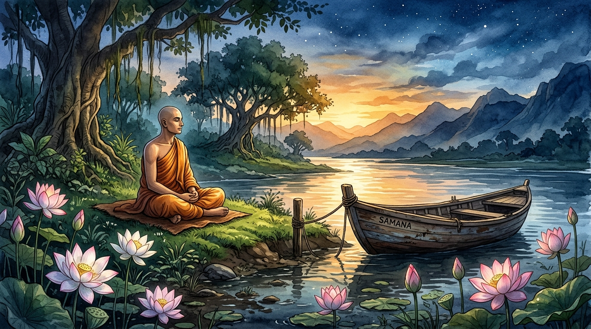

KENDİ YOLUN
Deneyimsel Bilgelik ve Karşılaştırmalı Felsefe Portalı
"Bilgi aktarılabilir ama bilgelik aktarılamaz. Bilgelik bulunabilir, yaşanabilir... ama söylenemez ve öğretilemez."
— Hermann Hesse, Siddhartha
🔊
Nehir Ambiyansı (Ses Başlat)
🔔 Tibet Çanı Çal
📜 Yeni Aforizma Al
🗺
Siddhartha'nın 8 Dönüşüm Eşiği
🛠
Zihinsel Hata Ayıklama (Philosophical Debugger)
🧘
Nehir Nefes Pratiği (4-2-6 Protokolü)
Zihnin geçmiş ve gelecek dalgalanmalarını durdurmak için nehrin ritmine uyum sağlayın.
Hazır
Başlamak için butona tıklayın
Nefes Pratiğini Başlat
📂
8 Modül ve 32 Derin Metin Arşivi